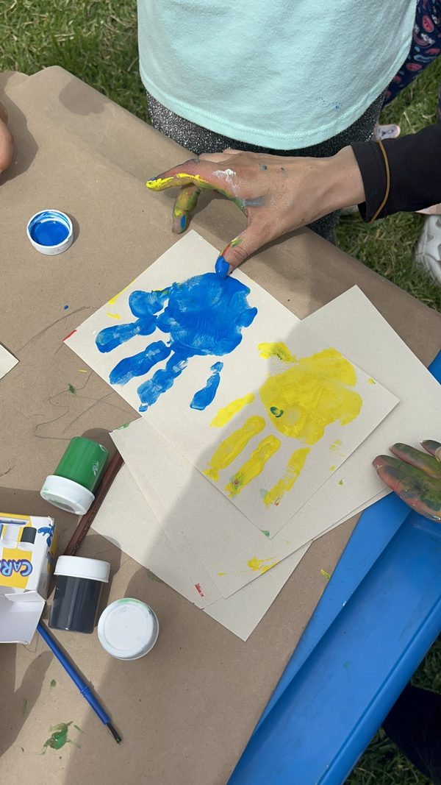
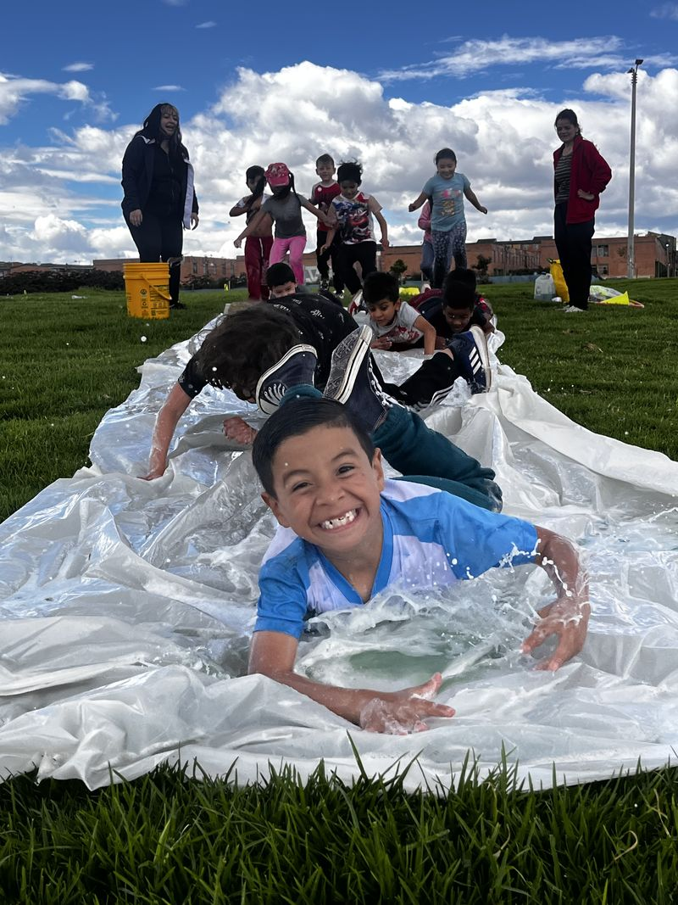
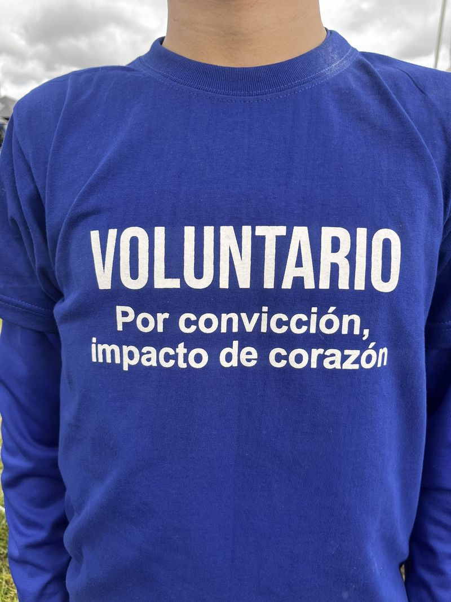
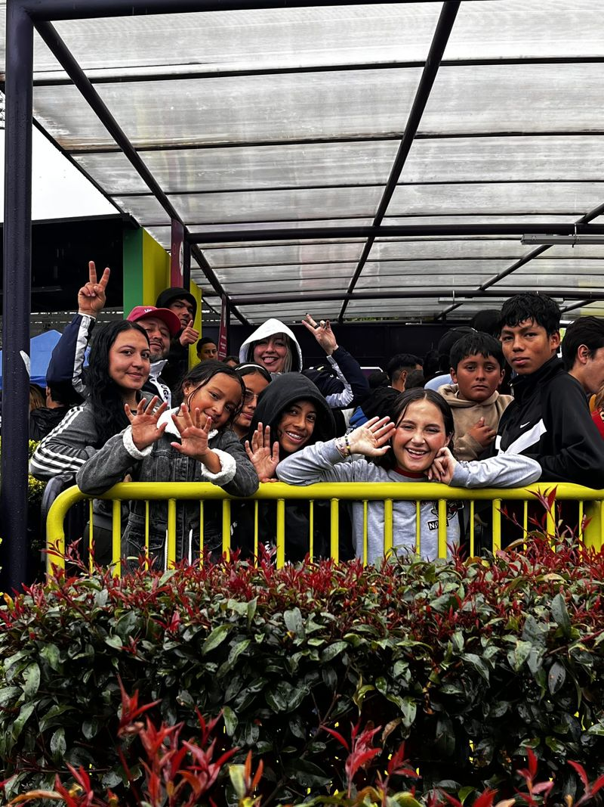

Hay muchas formas de ayudar
Puedes apadrinar a un niño, hacer una donación, dar tu tiempo como voluntario o patrocinar un programa con tu empresa. Cada forma apoya nuestro trabajo con niños, niñas y adolescentes de Patio Bonito y sus familias.
El apadrinamiento es una donación de $45.000 al mes, es decir, $1.500 al día. monto por confirmar
Cuatro formas de ayudar
-

Apadrina a un niño
Con $45.000 al mes (es decir, $1.500 al día) apoyas la formación, la alimentación y el acompañamiento de tu ahijado. monto por confirmar
Conoce cómo apadrinar -

Haz una donación
Una pequeña acción, un gran cambio: haz una donación única, con pago en línea seguro.
Conoce cómo donar -

Sé voluntario
Aporta tu tiempo y tu talento en Patio Bonito. Necesitas ser mayor de edad, tener disponibilidad los fines de semana y contar con seguro médico.
Conoce el voluntariado -

Patrocina un programa
Con $300.000 al mes tu empresa patrocina uno de nuestros programas y recibe cada trimestre un informe con cifras de impacto. monto por confirmar
Conoce cómo patrocinar
Dale a un niño un lugar donde crecer
Tu aporte mensual se destina a su formación, su alimentación y su acompañamiento.
Pendientes de confirmación (vista previa)
Cada elemento marcado por confirmar en esta página depende de una suposición de trabajo o de información que la fundación aún no ha confirmado. Nada se publica hasta que la fundación lo confirme.
- Apadrinamiento: el monto ($45.000 al mes, es decir, $1.500 al día) y qué cubre.
- Patrocinio empresarial: el monto ($300.000 al mes) y el informe trimestral.
- Tienda: la página actual incluye la tienda entre las formas de ayudar, con un enlace roto. Esta versión no la muestra hasta que se decida qué pasa con la tienda.
- Consentimiento de imagen: las fotos de la donación (niños en un tobogán de agua) y del patrocinio (un grupo detrás de una baranda amarilla) muestran niños y adolescentes identificables.
- Pie de página: NIT y dirección registrada; que los números de WhatsApp y los correos sean los públicos.